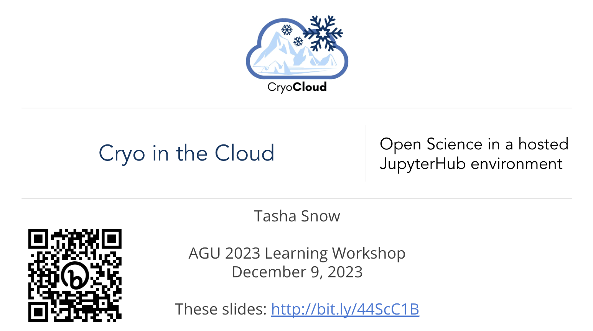
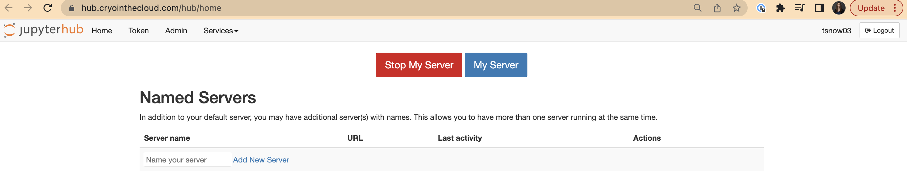

Demo CryoCloud#
Authors: Tasha Snow
Learning Objectives
Learn how to access and use CryoCloud
Open CryoCloud and clone the CryoCloud website
Access the CryoCloud powerpoint whenever you need to reference it#
Open the powerpoint by directly clicking on the hyperlink above or to open it in the CryoCloud Linux Desktop web browser as follows:
Copy this hyperlink:
https://docs.google.com/presentation/d/16aWmMSysinhEcvOHn6diDkxwJI6Gp9yrVurMjpHzaLY/edit#slide=id.p1Click on the plus (
+) sign in theFile Browserto the left to open aLauncherwindowUnder Notebooks, click on
Desktopto access the Linux Desktop. This will open a new tab.Click on the
Web Browsertool (globe) at the bottom of the screenPaste the url into the search bar

Open CryoCloud#
Scroll through the server sizes. Stick with the 4 Gb server (the default).
Tip
Be realistic about the max memory you will need. The amount you select, you are guaranteed, but if you use more you risk crashing your server for you and anyone else who is sharing with you. If you crash the server, it just requires logging out and reopening it, but it could be annoying for everyone.
Check your memory usage at the bottom in the middle of the screen.
Scroll through the languages. Choose the Python programming language.
Sit back and learn about each of the tools!
JupyterHub options and viewing setup
Github
Virtual Linux desktop
SyncThing
Viewing and editing of different files
Now after the demo…
Task: Clone the CryoCloud jupyterbook#
We will import the CryoCloud Website Github repository.
To do this:
Select the plus (
+) sign above theFile Browserto the left, which will bring up aLauncherwindow.Click the
terminalbutton under Other to open it. This is your command line like you would have on any computer.
Before cloning the repo, you have the option to switch to another file folder using the change directory terminal command: cd folder if you do not want the Hackweek repo in your current directory (you can check which directory you are currently in using print working directory command: pwd).
cd yourfoldername
Now clone the hackweek code into your current directory:
https://github.com/CryoInTheCloud/CryoCloudWebsite.git
You will see the folder pop into your
File Browseron the left if you have the current directory open. Click on the folder to navigate through the files.To open this tutorial, click on the
booksubdirectory >tutorialsand double click onCryoCloud. This should open up this tutorial in case you want to review it in the future.
Shutting down your JupyterHub#
TIP
Best Practice: Shut down the CryoCloud server when you are done to save us money.
If you only close your tab or click log out, your server will continue running for 90 minutes.
Whenever you are done, it is best to shut down your server when you sign out to save on money for CryoCloud. Time on the JupyterHub costs money and there are systems in place to make sure your server doesn’t run indefinitely if you forget about it. After 90 minutes of no use, it will shut down. We prefer you shut down the server when so we save that 90 minutes of computing cost. To do so:
In upper left, click on
File>Hub Control Panel, which will open another tabClick the
Stop Serverbutton. Once this button disappears after you clicked it, your server is off.Click
Log Outin the top right of your screen and you will be logged out, or you can start a new serverYou can now close this tab and the other tab where you were just working

Summary#
🎉 Congratulations! You’ve completed this tutorial and have seen how we can access and use CryoCloud.
References#
To learn more about CryoCloud, gain code for NASA data access, and find other Cryosphere tutorials check out this other documentation: